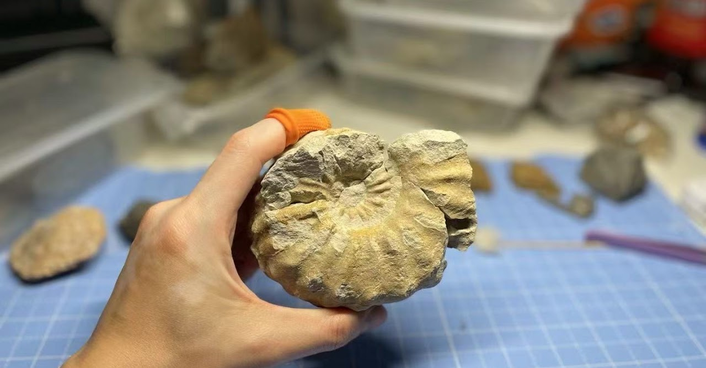
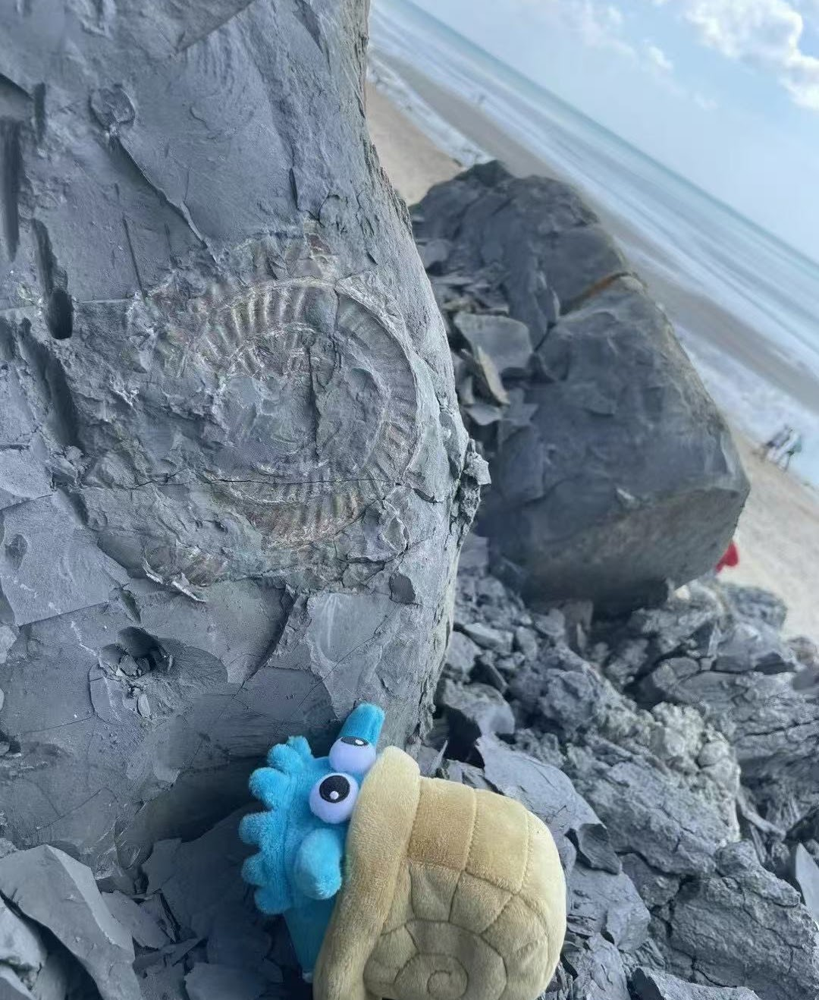
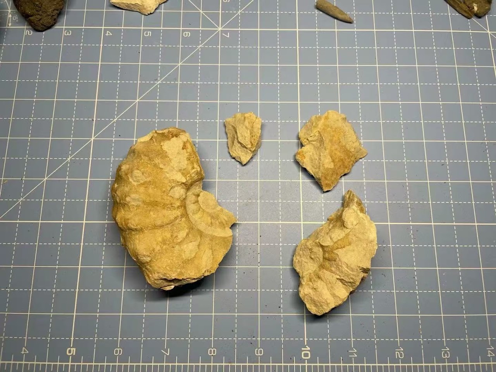
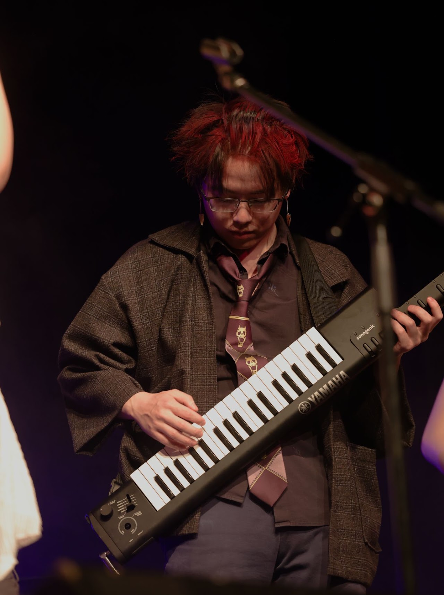
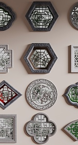
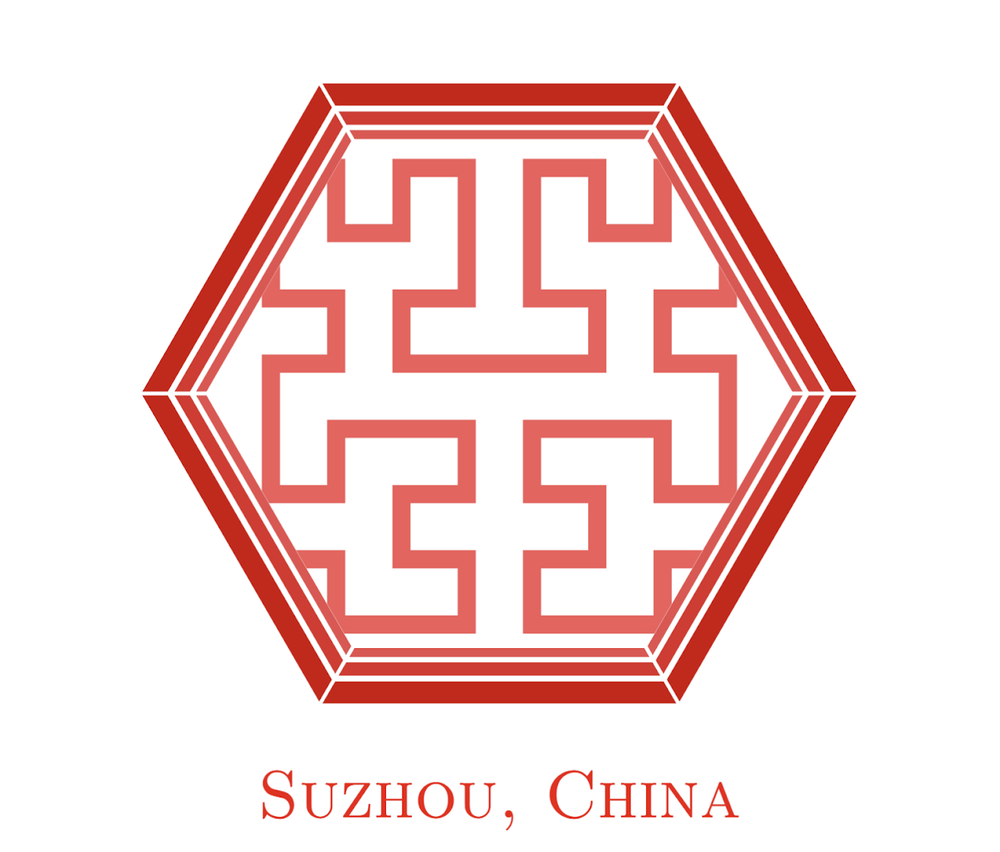

Experiences
Master ball tier (top 2000 globally) for double battle in Pokémon Sword and Shield, with only ghost Pokémon
Gold medal top 100 for Munchee, Ying and Xuance Baili in Honor of Kings
Reach the standard of the Chinese national third-grade athlete (200m, 24.60s)
Palaeontology enthusiast, hunted 300+ pieces 20+ kg of fossils




Music busking in London, 21.6 pounds earned
Completed specialised course in the Department of Music: Advanced Piano Improvisational Accompaniment II (90/100)
Keyboard & leader, K-ON Band (2014-2017)
Chinese flute, Modern Chinese Orchestra (2018-2021)
Keytar, Melon Band (2023)
Designed the logo (drawn by TikZ in TeX) for the China Fractal Geometry and Dynamical System Academic Conference 2017, Suzhou, China
Suzhou is renowned for its traditional Chinese gardens. The design on the right combines the classic regular-hexagonal “ornamental windows” motif of Suzhou gardens with the Hilbert curve as a space-filling fractal.

